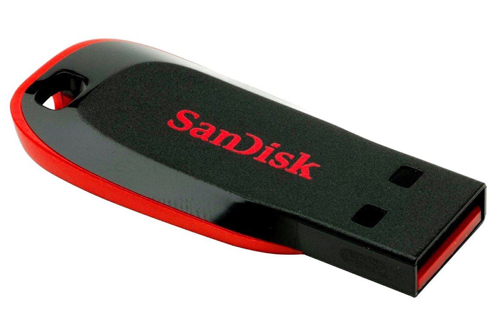

Desvendando a Tecnologia
Desvendando a Tecnologia
Dispositivos
Pen Drive
Pen drives, também conhecidos como drives USB ou flash drives, são dispositivos de armazenamento portáteis que utilizam memória flash para guardar dados. Eles são pequenos, leves e possuem capacidade de armazenamento que varia de alguns gigabytes a terabytes. Os pen drives são amplamente utilizados para transferir e transportar dados entre dispositivos, como computadores, laptops e até mesmo alguns dispositivos móveis. Eles oferecem conveniência e portabilidade, tornando-se uma solução popular para armazenamento temporário e transferência de arquivos.
